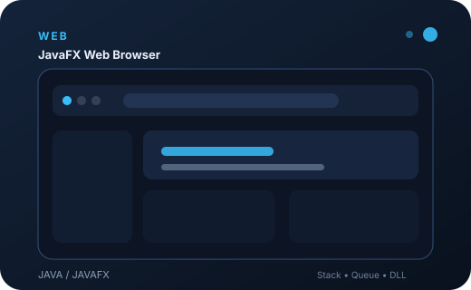
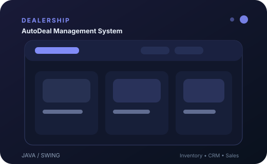
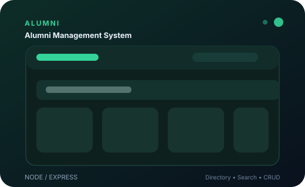
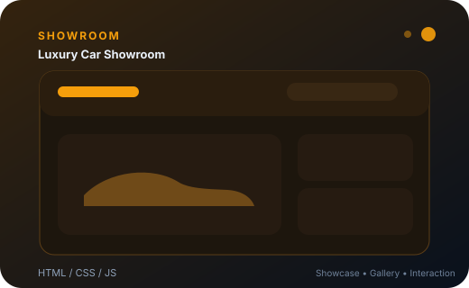
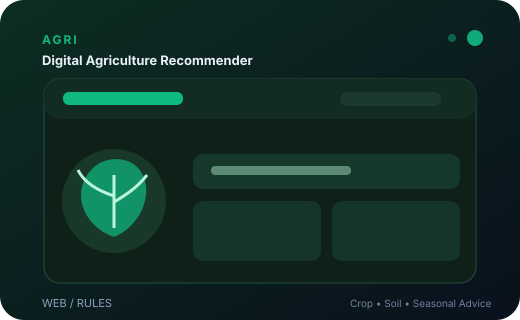
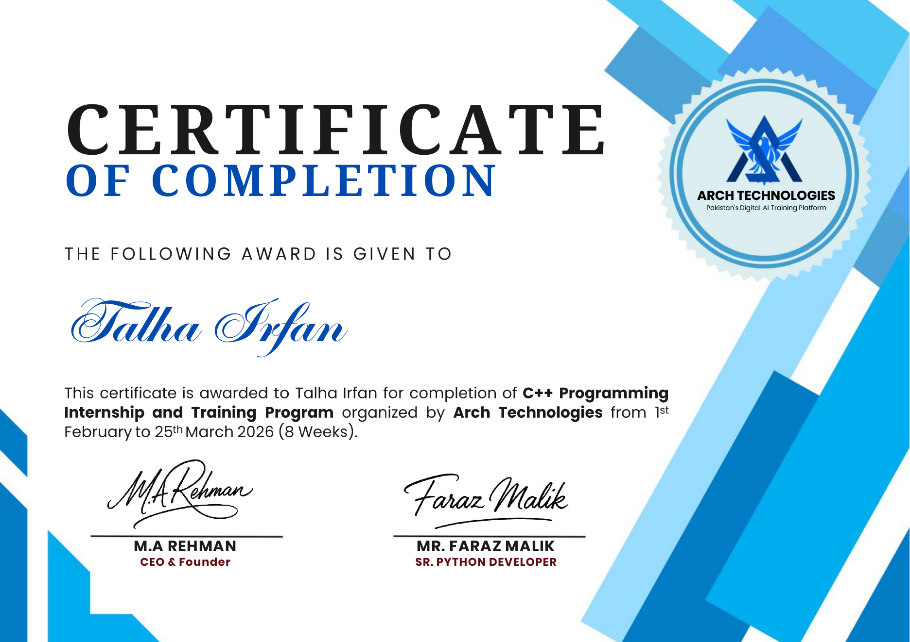

Problem Solver
Analytical mindset with a focus on turning requirements into workable solutions.
Hi, I'm
Passionate about building reliable and scalable software with a strong foundation in Java, C++, SQL and modern development technologies.
I’m a Software Engineering student at Sukkur IBA University with a 3.77/4.00 CGPA. I enjoy solving problems, learning new technologies, and building applications that connect software concepts with practical use.
My project work spans desktop applications, database-driven systems, web development, data structures, and introductory machine learning. I’m especially interested in writing structured code and understanding the engineering decisions behind software.
Analytical mindset with a focus on turning requirements into workable solutions.
Exploring backend development, testing, architecture, AI/ML, and new tools.
Comfortable collaborating on academic projects and documenting shared work.
Prefer learning by applying concepts to desktop, web, database, and data projects.
A simple timeline of the academic and professional milestones represented on this portfolio.
Sukkur IBA University
Java · Web · Databases · DSA · AI/ML
Arch Technologies · 8 weeks
Backend development & real-world software
Explore a category first, then open it to see the technologies and concepts underneath.
Academic and personal projects across software development, web, data, and systems.

★ FeaturedDesktop browser demonstrating custom Stack, Queue and Doubly Linked List structures with MySQL-backed history, bookmarks, tabs and user data.

Desktop dealership management system covering customers, vehicle inventory and sales/deal workflows with a MySQL backend.

Web application for alumni records with search, profile management, editing and database persistence.
 ML Project
ML ProjectMachine learning coursework project covering resale price prediction, car-condition classification, fairness checks and market segmentation.

Responsive frontend project with interactive car showcases, gallery-style sections, services and modern visual styling.

Console-based vehicle inventory and rental application using file handling for persistent application data.

Rule-based web decision support for crop recommendation, soil suitability, seasonal insights and disease-treatment guidance.
One verified internship milestone, presented as part of the same journey system.
C++ Programming Internship & Training Program
Completed an 8-week C++ Programming Internship and Training Program with Arch Technologies.
Sukkur IBA University · Sukkur, Pakistan
Relevant areas include Object-Oriented Programming, Data Structures & Algorithms, Database Systems, Software Construction, Software Quality Engineering, Requirements Engineering, Web Engineering, and Software Design & Architecture.

Have a project, opportunity, or just want to say hello? I’m happy to connect.
$ whoami
talha-irfan$ focus
software engineering$ next
build → learn → repeat$ status
open_to_opportunities=true